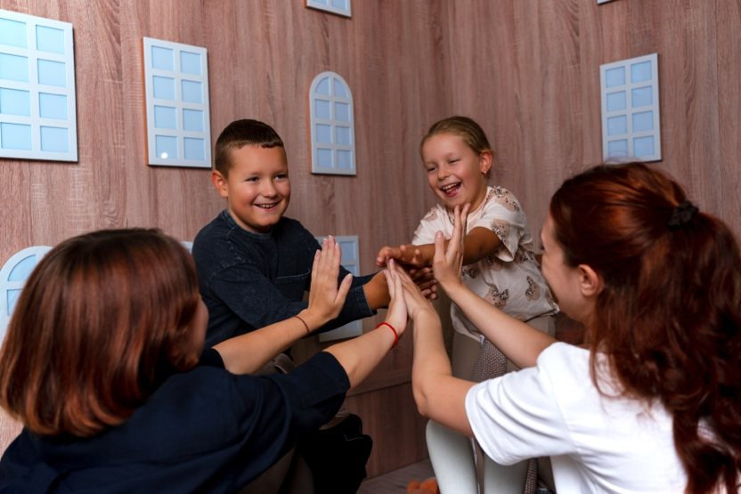

Evidence-Based Approach
We use research-informed methods and internationally recognised assessment protocols.
Evidence-Based Therapy Centre
We are a psychology centre providing support for children, teenagers and adults, guided by current research and clinical recommendations. We offer individual and group psychotherapy, psychological assessments and specialist support programmes, selecting approaches in line with each client’s concerns, age, needs and goals.

We help children, teenagers, adults and families better understand what they are experiencing, cope with psychological difficulties and develop lasting skills for self-regulation and connection with others. Our work is based on clear goals, respect for each client’s individual needs and boundaries, and approaches with established evidence of effectiveness.
We also support families during pregnancy, while preparing for parenthood and as they adjust after a baby is born.
We use research-informed methods and internationally recognised assessment protocols.
The format and plan of support are shaped by each client’s concerns, age, current wellbeing and life context.
We offer in-person appointments and online sessions.
The descriptions below are intended to help you identify common reasons for seeking support. They are not a diagnosis and do not replace a consultation with a qualified professional.
Difficulties with attention, behaviour, communication, mood, adjustment or learning.
Anxiety, stress, low self-esteem, exam-related pressure and learning difficulties.
Anxiety and depression, stress, emotional exhaustion, burnout and life transitions.
Support for parent–child relationships, adapting to change and building resilient family communication.
Not sure which service is right for you? Get in touch, and we will help you choose a suitable format.
Contact UsThese are some of the services through which our work most often begins. Further details are available on our Services, Assessments and Programmes pages.
Support with anxiety, mood difficulties, stress, burnout and life transitions.
Support tailored to a young person’s age, development and family context.
Assessment of development, emotional wellbeing, behaviour and learning.
A standardised observational assessment of social interaction, communication, play and behaviour in children and teenagers.
Building self-regulation skills and reducing exam-related anxiety in university students.
Support for families during pregnancy and while adjusting after the birth of a baby.
This assessment can help you explore career options, identify possible areas of study and make a more informed plan for your professional future.
We use approaches whose effectiveness has been examined in clinical research.
We do not apply one standard pathway to every client.
When working with children, we consider the family system and the role of significant adults.
We discuss goals, the format of support, feedback and next steps in advance.
We monitor progress and adjust the support plan when needed. We do not promise guaranteed outcomes; instead, we work with you toward shared and agreed goals.
Tell us about your concerns by Telegram, phone or email.
Our care coordinator will contact you to clarify your request and arrange appointment times with suitable specialists.
When appropriate, we arrange assessment appointments and gather relevant information.
Together, we agree on the frequency of appointments, goals and feedback format.
Reducing exam-related anxiety and developing self-regulation skills.
About the ProgrammeSupport during pregnancy, preparation for parenthood and adjustment after a baby is born.
About the ProgrammeUnderstanding your child’s behaviour, working with parental anxiety and building resilient communication in the family.
About the ProgrammeOur specialists bring together clinical, research, educational and practical expertise.
Articles by our psychologists for parents and adults who would like to better understand their concerns before getting in touch.
We can arrange a brief introductory conversation to answer your questions, clarify what you are looking for and discuss a suitable format of support.